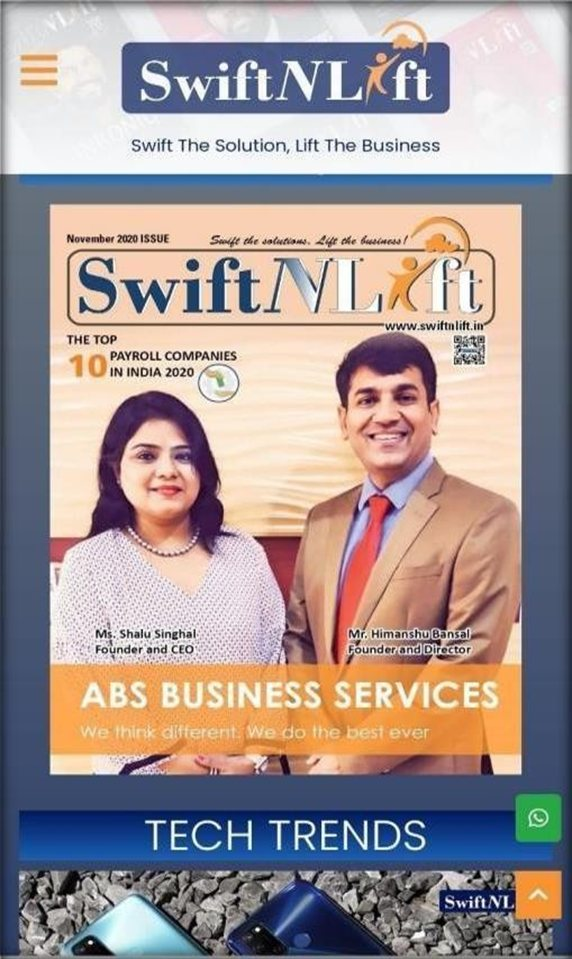
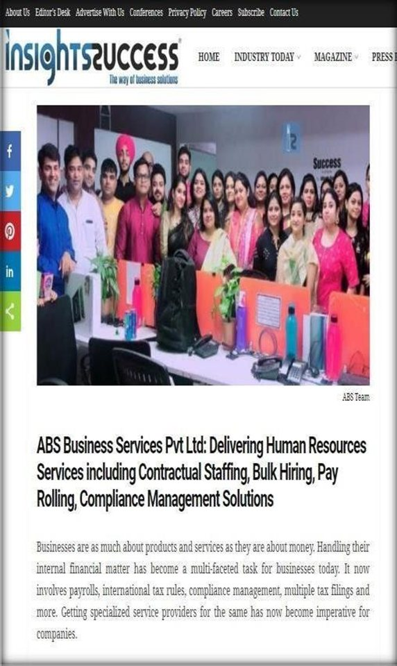

01
Contract Staffing
Deploy skilled temporary and contractual manpower with disciplined onboarding, attendance control, statutory documentation and site-level coordination.
Established 2015 · Faridabad, India
Your HR Growth Partner for contract staffing, payroll outsourcing, HR operations, compliance management and reliable workforce deployment across India.
Core Services
ABS supports growing businesses with flexible manpower, permanent hiring, payroll processing, HR administration, statutory compliance and managed staffing programs.
Deploy skilled temporary and contractual manpower with disciplined onboarding, attendance control, statutory documentation and site-level coordination.
Streamline salary administration, payslips, tax deductions, PF, ESIC, reimbursements and payroll compliance with dependable checks.
Outsource HR administration, employee lifecycle workflows, policy support, records management and day-to-day workforce helpdesk needs.
Plan and execute high-volume recruitment for frontline, industrial, field, campus and operational roles with speed and structure.
Manage PF, ESIC, labour law records, statutory filing, registers and payroll-linked compliance processes with tighter accountability.
Source, screen and coordinate quality professionals for long-term positions across HR, operations, finance, administration and business functions.
Why ABS
From high-volume staffing to leadership hiring, ABS combines field discipline, client partnership and compliance-first execution.
Workforce volumes, skill mix, location, shifts, timelines and compliance obligations.
Candidate mapping, verification, shortlisting and client-ready coordination.
Attendance, payroll, statutory filings, performance tracking and ongoing support.
Industries
ABS serves manufacturing, logistics, retail, IT, healthcare, BFSI, infrastructure, e-commerce and other workforce-intensive industries.
SEO Focused HR Partner
ABS Business Services works with organizations that need reliable manpower, transparent payroll processes and compliant workforce administration without adding internal operational burden.
Get staffing support for temporary manpower, industrial deployment, payroll transfer, managed services and recruitment campaigns.
Reduce repetitive HR administration, improve employee record keeping and keep statutory processes aligned with business growth.
Access relevant job opportunities, structured interview coordination and application support through ABS career channels.
FAQs
ABS combines field execution, compliance focus, payroll discipline and long-term client partnership for workforce programs.
Yes. ABS supports payroll processing, salary administration, deductions, statutory filings and compliance-linked documentation.
ABS serves manufacturing, logistics, retail, FMCG, healthcare, BFSI, infrastructure, ecommerce, education, telecom and more.
Leadership
ABS is founded and led by Ms. Shalu Singhal — a Chartered Accountant and Company Secretary who has worked with ICICI Bank, KPMG, Deloitte and Gulf Audit (Bahrain).
Recognition
ABS Business Services and its group company Right Advisors have been recognized by leading business publications in India and abroad.

SwiftNLift · Nov 2020

Insights Success
Japan Business Feature
Tell us your hiring volume, locations and timeline. ABS will help you plan staffing, payroll and compliance with confidence.